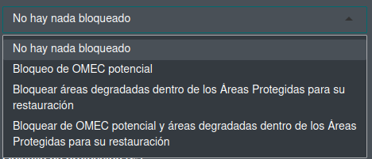
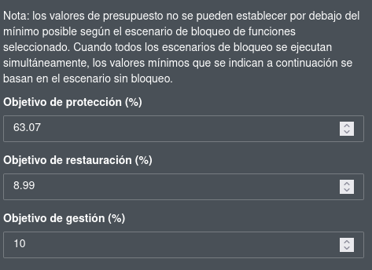
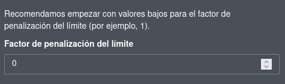
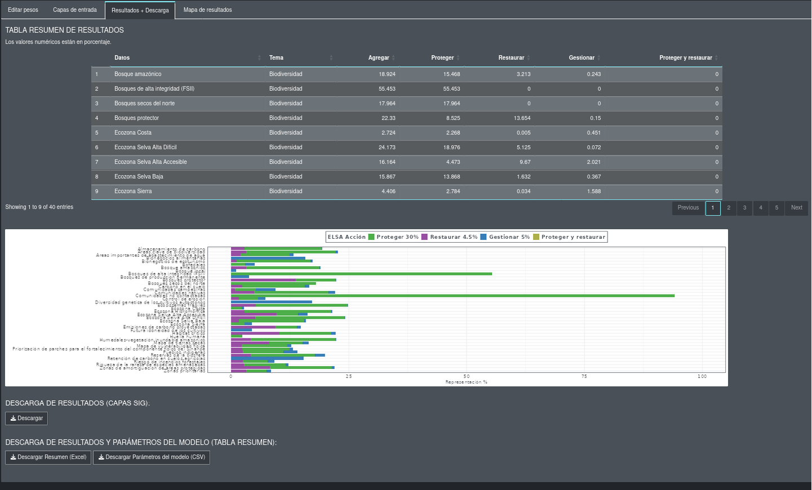
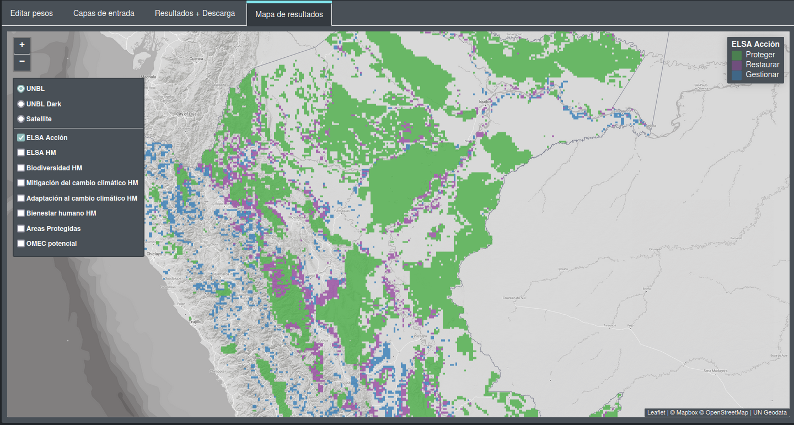

Exploring the Prioritizing Nature Webtool
The Prioritizing Nature Webtool you have running locally on your computer is the same application that you can access running online for either Ecuador or Peru. You may be familiar with the tool’s layout from previous trainings, meetings and workshops, but below we provide an overview of the layout of webtool running on front of you.
The webtool is broadly broken apart into a Header across the top of the page, and two columns, the first of which (on the left) covers ~1/3 of the width of the screen, while the second column (on the right) covers ~2/3 of the width of the screen. The column on the right has four (4) tabs on it (similar to tabs in a web browser).
Global Parameters
In the column on the left you will find global parameters that you can set for analyses you run. These do have default values that are set when you start the webtool. Starting with the top-most parameter, these are:
A tickbox option to specify whether you want to run either a single prioritisation or multiple prioritisations (one for each data theme that exists). This defaults to running a single prioritisation (the box is unticked). In the Spanish language version of the tool this shows as:
{kind=link}
A dropdown menu allowing you to select how you would like to deal with potential OECM and degraded areas within existing Protected Areas. There are four (4) options:
Lock-in nothing;
Lock-in potential OECM areas (for protection);
Lock-in degraded areas within existing protected areas (for restoration);
Lock-in potential OECM area (for protection) and degraded areas within existing protected area (for restoration)
In the the webtools it will appear like the image below:

{kind=link}
Protect, Restore, and Manage budgets. Budgets are in percentages (%) and are the maximum area of a country that could be spatially allocated to particular action.
Note
As noted in the tool, these values cannot be smaller than the minimum area (again, as a %) that is already locked in to an action based on your lock-in selection above.
For example, the image below (in Ecuador), if you select to lock-in OECMs (either OECMs by themselves or OECMs and degraded areas within existing protected areas), the minimum budget value for protect increases greatly. In simple terms, if OCEMs are locked-in to a solution (in Ecuador), a minimum of 63.07% of the country is allocated to the Protect action (you can increase the budget higher, but not lower it).
Boundary Length Penalty Factor. The BLP (or sometimes called the BLM - Boundary Length Modifier) controls how compact a solutions is.
When this is set to 0 (the default value, shown above), each planning unit will be considered for allocation to an action based on its own attributes and contribution to the solution. When this value is greater than 0, the optimisation model will producer more grouped allocations of planning units to actions; the greater the BPF value you choose, the more the model will group planning units into actions.
Important
Any increase in BPF from 0 will cause increases in memory consumption on your computer and the solver and will increase solve times. Large BPFs can produce VERY LONG SOLVE TIMES. If you modify this value, be sensible (typically values of 100 to 500 will induce suitable clumping in the outputs).
{kind=link}
{kind=link}
The column on the right is itself made of of four (4) tabs that each have different purposes:
Editing Weights
In the first of these tabs (the left most) loads a table of the input feature data that is used in the prioritisation. Four (4) columns are shown that provide the name of the Data, the data’s Theme, the Weight given to the feature, and a column indicating the policy the feature speaks to (either GBF or NBSAP, depending on which county tool you are looking at).
{kind=link}
The values in the Weights column can be edited (the others cannot).
Input Data
A map will generate and open in this tab showing the weighted input feature data layers, as well as the Protect, Restore, and Manage zones. It may take a little time to generate the map (depending on your computer).
{kind=link}
Results & Downloads
The Results & Downloads is, as the name implies, where you will find the results of the prioritzaion. Once an optimisation has completed this tab will present a table the feature representation in the solution and a bar plot showing this graphically. You are also able to Download the GIS data layers (as Geotiffs) of the solution here, as well as an Excel (.xlsx) version of the output representation table and a CSV of the model parameters you passed to priortizr and the optimisation solver.
{kind=link}
Note
This tab will be empty before any optimisation has been run.
Results Map
Opening this tab before you have run an optimisation will generate a map showing:
A heatmap of the summed (weighted) input feature layers.
Heatmaps for each date theme.
Existing protected areas.
Potential OECM areas in the country.
{kind=link}
After you have completed an optimisation, the results map will generate and open in this tab showing:
The Protecting Nature prioritisation results map (and actions)
A heatmap of the summed (weighted) input feature layers.
Heatmaps for each data theme.
Existing protected areas.
Potential OECM areas in the country.
It may take some time to generate the map, depending on the speed of your computer.
{kind=link}
If you selected to run multiple theme prioritisations, the map in this tab will show:
The Protecting Nature prioritisation results map (and actions).
The prioritisation map for each specific data theme.
A heatmap of the summed (weighted) input feature layers.
Heatmaps for each data theme.
Existing protected areas.
Potential OECM areas in the country.
It may take some time to generate the map, depending on the speed of your computer.